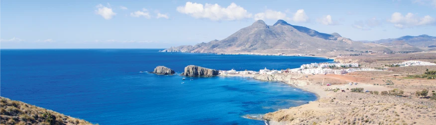

Esta ruta de cinco etapas recorre una costa marcada históricamente por los ataques de corsarios y los sistemas defensivos. Torres, fortalezas y calas conservan las historias de una frontera mediterránea siempre alerta. Te recomendamos escuchar el audio introductorio para comprender el contexto histórico antes de iniciar el recorrido.